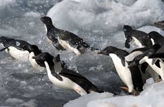
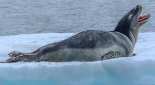
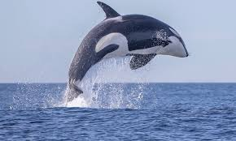

Day 2: Antarctic Wildlife
Antarctica is known for its extreme environment, but even in these harsh conditions, life finds a way. The continent is home to a wide variety of wildlife, especially in the surrounding Southern Ocean. These animals are uniquely adapted to the cold and often rely on the ocean for their survival.
Today, we’ll explore some of the most iconic animals that call Antarctica home, including penguins, seals, and whales.
Penguins
Penguins are the most recognizable animals in Antarctica. These flightless birds have adapted to the cold with thick layers of blubber and dense feathers. The Emperor penguin is the largest and perhaps the most well-known species. They are famous for their long treks across the ice during the harsh Antarctic winter to breed.

Adelie penguins are another common species found along the Antarctic coast. They build their nests from stones and are known for their loud, social colonies.
Seals
Seals are another important part of the Antarctic ecosystem. The Weddell seal is known for its deep dives under the ice in search of fish. They can hold their breath for over an hour, allowing them to explore under the thick sea ice.

Leopard seals are the top predators in the Antarctic waters. They have a powerful bite and primarily feed on penguins and other seals. Their long, slender bodies allow them to be agile hunters.
Whales
Many whale species, such as the blue whale and humpback whale, migrate to the Antarctic waters during the summer months to feed on the abundant krill. These gentle giants can be seen breaching the surface, often in groups, as they gorge on the rich nutrients of the Southern Ocean.

Orcas, or killer whales, are also found in these waters. They are highly intelligent and social animals, often hunting in packs to take down larger prey.
Did you know?
üêß Did you know that Emperor penguins are the tallest and heaviest of all living penguin species? They can stand up to 1.2 meters (4 feet) tall and weigh up to 45 kilograms (100 pounds).
ü¶≠ Did you know that Weddell seals can hold their breath for up to 80 minutes? This allows them to dive deep under the ice in search of food.
üêã Did you know that the blue whale, found in Antarctic waters, is the largest animal to have ever existed? It can grow up to 30 meters (98 feet) in length and weigh as much as 200 tons.
❄️ Did you know that krill, tiny shrimp-like creatures, are the cornerstone of the Antarctic food web? They are a primary food source for many species, including whales, seals, and penguins.
ü¶Ö Did you know that the wandering albatross, often seen around Antarctica, has the largest wingspan of any bird, reaching up to 3.5 meters (11.5 feet)?
Conclusion
Today, we have explored the resilient and diverse wildlife of Antarctica. These animals have evolved unique adaptations to survive in one of the harshest environments on Earth. Tomorrow, we’ll delve into the scientific research conducted in this icy frontier, which helps us understand our planet and its changing climate.